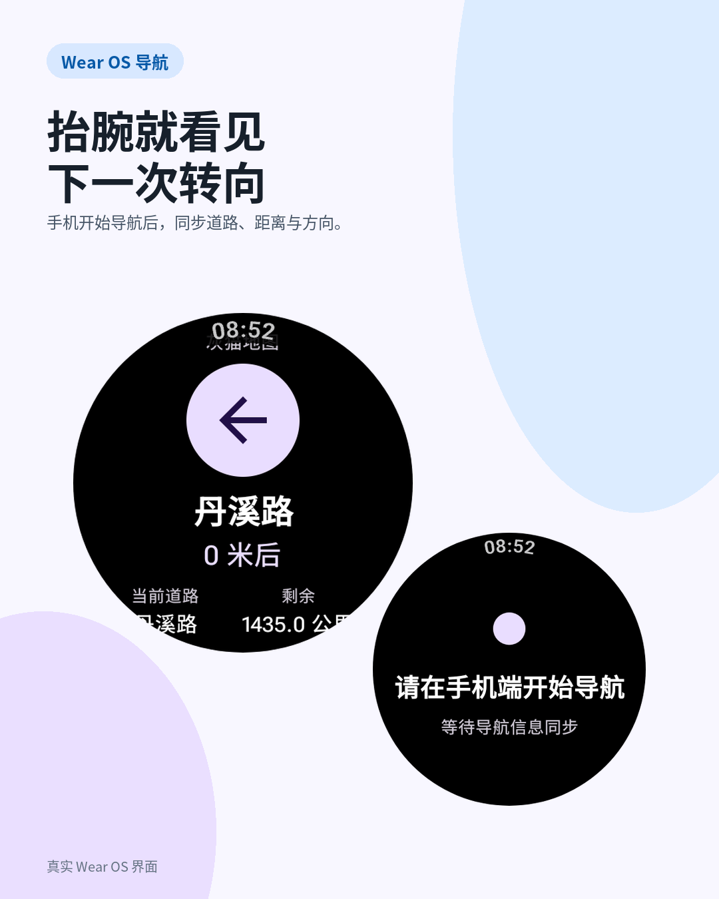

核心功能
- 地图定位与 POI 搜索
- 驾车路线规划与内置导航
- 家、公司与周边快捷入口
- 微信位置转发
- Wear OS 基础适配

查找地点、规划驾车路线、导航、打开微信分享的位置，以及快速前往保存的家或公司地址。
无需账号；开发者不设服务器保存个人资料、位置轨迹或搜索历史。设置、快捷地址和部分缓存主要留在设备上；百度 SDK 会按其政策处理位置、搜索、路线、设备和网络信息。
需要配置百度地图 Android AK；撤销位置或网络权限会影响地图与导航。Android Auto 当前暂时移除，Wear OS 仅为基础适配。



請只從下方官方渠道安裝。